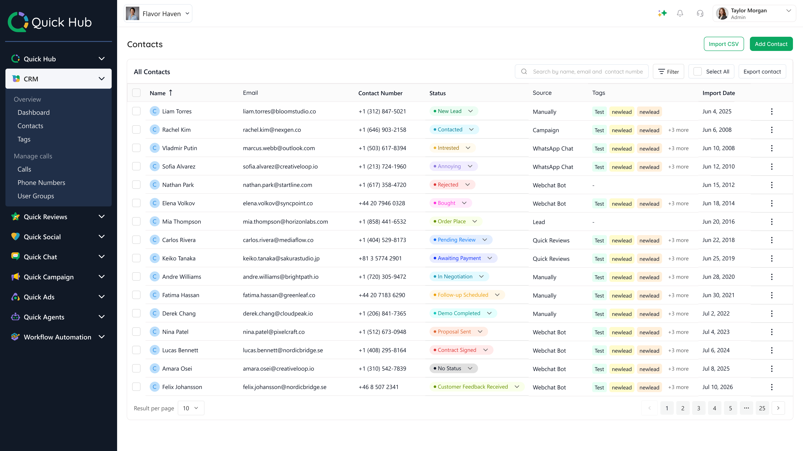
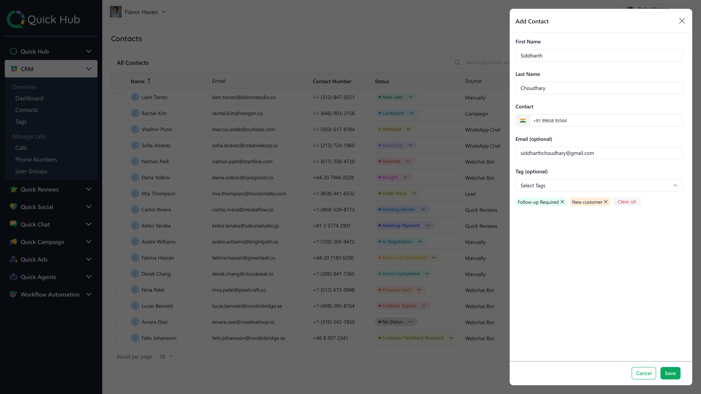
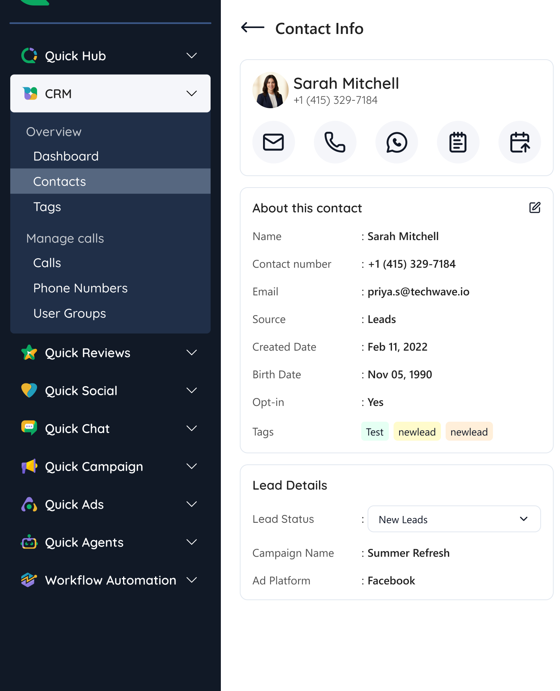
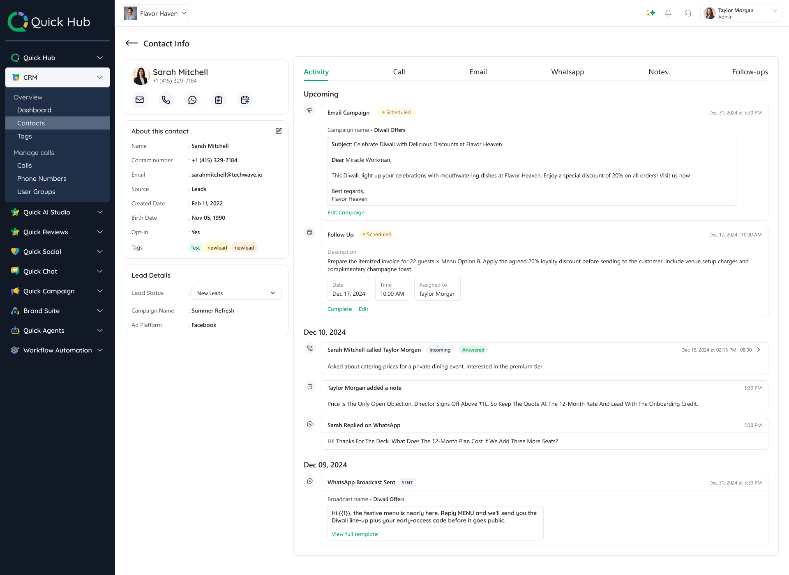
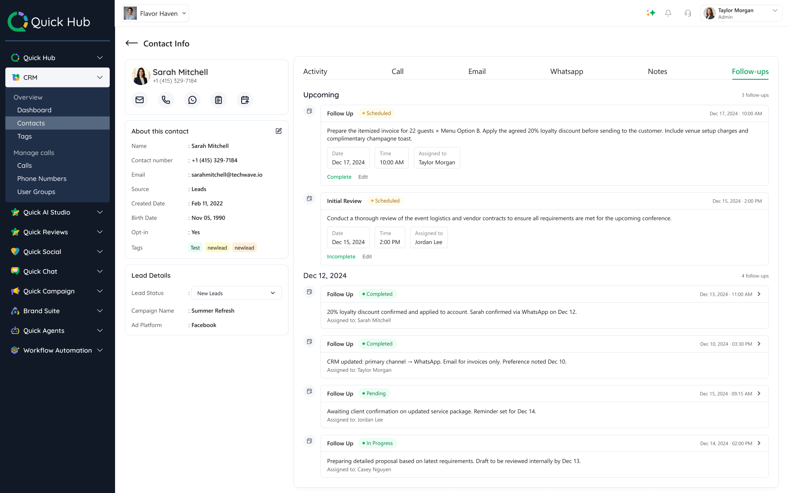
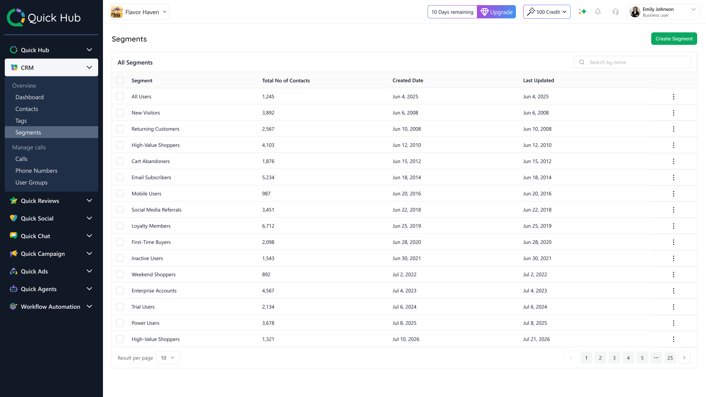

Creating a centralized customer system
Quick CRM is the centralized customer management system within the Quick Hub ecosystem. When I started working on this product, there wasn't a proper way to manage customers. Contact information was scattered across Quick Chat, Quick Campaign, and Quick Ads, with each product storing only basic details like name, email, and created date.
There was no shared customer profile, activity history, or reusable customer data. My focus was to build a centralized CRM that brought customer information into one place and later evolve it with segmentation to support campaigns and broadcasts.
There were contacts everywhere, but there was no centralized customer system.
The Problem
We had customer records across Quick Hub, but businesses didn't have a connected way to manage and use them.
{{ pc.title }}
{{ pc.body }}
Goal
Create one connected customer system where businesses can manage, understand, organize, and activate their customer data across Quick Hub.
{{ gc.title }}
{{ gc.body }}
Approach
Understanding the problem from multiple perspectives
Before designing the CRM, I looked at the problem from both product and business perspectives. I used competitive analysis and insights from business owners, the sales team, and PMs to understand what the CRM needed to solve.
{{ ai.title }}
{{ para }}
{{ ln.body }}
Turning the product decision into the CRM experience
Start with an overview
The dashboard gives business owners a quick view of their customer base and what needs attention, before they move into any individual record.
Turn Contacts into a workspace
A basic contact table answers "Can I find this customer?" A CRM should also help users organize groups of customers and take action on them.


Make the customer the primary record
{{ q.text }}
The profile answers those four in a fixed order. Identity and the available actions sit at the top of the left panel, the information the business holds and its tags below them, and everything time-based occupies the main area — so nothing important sits behind navigation.

The customer became the primary unit of the CRM, rather than the contact row.
Splitting the record by channel organizes information tidily, but it turns one relationship into several partial ones.
Give the customer a history, not just a profile
All of it lands in one chronological view, but not at the same weight. Communication needs enough context to recognize a conversation; record changes stay compact. Making every event visually equal would have produced a log rather than a relationship.
{{ d.body }}

Connect customer context to action
Customer context is useful when it helps the business decide what to do next. I structured each activity around the type of interaction, while keeping follow-ups connected to the same customer context.
From context to action
Customer interactions provide the context needed to decide what happens next. Follow-ups turn that context into scheduled, assigned work without separating the action from the customer record.

Making customer data ready for CRM
How do we bring existing customer data into a structured CRM?
A centralized CRM still needs existing customers
Businesses already had customer information before Quick CRM existed.
Moving to a centralized CRM meant giving them a practical way to bring that existing data with them.
Bring existing customer data into CRM
Businesses can bring their existing customer list into CRM using a CSV file. The import begins in Contacts, where the customer base already lives.
Because spreadsheets don't share one structure, each CSV column has to be connected to the right CRM field, and the data has to be checked before any customer records are created.
The result is a safer path from an existing customer spreadsheet to a centralized CRM database.
Finding customers wasn't enough
Once customer data was centralized, businesses could search and filter their customers. But they could find a group without being able to keep that group for later.
A filter answered a question right now. It didn't create a reusable audience for later.
Having all customers in one place wasn't enough
Once customer data was centralized, businesses could manage their customers from one place.
But when running a campaign or broadcast, they often needed to include or exclude a specific group of customers.
The existing way of building this audience involved repeatedly filtering and working through customer lists, making the process lengthy and difficult to reuse.
Finding a simpler way to define audiences
I looked at how CRM and marketing products handle audience selection and segmentation and compared those patterns with the workflow businesses were trying to accomplish in Quick Hub.
The existing filtering approach could help find customers, but it was not an efficient way to repeatedly build and manage the same audience.
I introduced Segments to turn audience selection into a reusable system.
From filtering customers to defining an audience
Customer D automatically becomes part of the Segment. If a customer no longer matches the rule, they can automatically leave it.
The business defines the rules. CRM keeps the audience updated.
Building the audience
With Segments, businesses can define an audience using information already stored in CRM. The process starts with an empty audience, and as conditions are added the matching customer count shows how large that audience is before it is saved.
Both conditions must be true for a customer to belong to this group.
OR lets businesses create alternative ways for a customer to qualify.
AND
Import Date = Jun 03 – Jul 21, 2026
AND
Source = WhatsApp
Save it once, use it again
Once the audience is defined, the business can save it as a Segment instead of rebuilding the same customer group each time.

One audience, multiple uses
Once created, the same Segment can be reused wherever a specific customer audience is needed.
From scattered contact records to a reusable customer system
- {{ b }}
- {{ a }}
Quick CRM gave businesses one place to manage customers, understand their relationship with the business, and turn customer data into reusable audiences across Quick Hub.
What I owned
{{ o.body }}
The problem changed as the product became more useful
The important question wasn't only what information should appear on the screen. It was what information needed to become reusable system behavior.
That changed how I approached CRM design: not as a collection of screens, but as a system that connects customer information, relationships and actions across the product.